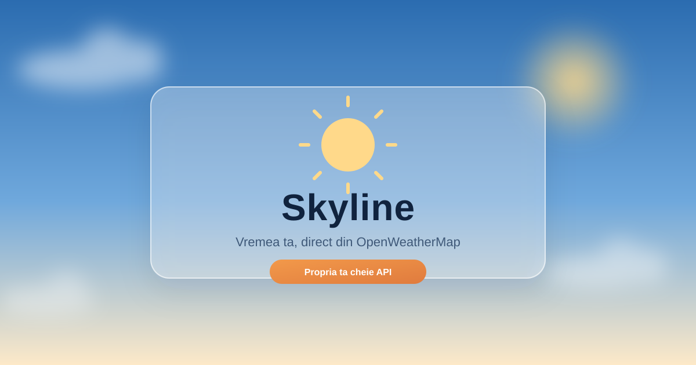

Hi, I'm Alexandra (Ada).
Based in Bucharest, transitioning from technical support into QA and software development — building real projects to prove it, not just claim it.
I spent the last few years in technical support — most recently three years at HP as an EMEA Level 1 Technical Support Engineer, troubleshooting issues for internal teams and partners, escalating across ten different L3/dev teams, and acting as the go-to specialist on my own team's tooling. Alongside that, I worked as a QA tester at uTest, getting my first real hands-on exposure to structured test cycles and bug reporting.
In 2026 I decided to go all-in on that QA and development direction. I'm studying for ISTQB certification on my own and taking the "Vibe Coding" course at Step IT Academy — building real applications with databases using AI-assisted development — while building the eight projects in the Portfolio tab to actually prove the skills — product decisions, UX, QA process, and the code itself — rather than just claim them.
I'm upfront about how these were built: the product decisions, UX, specs, and testing are mine; the code was written in pair-programming with an AI assistant (Claude). I think that's an honest and increasingly normal way to work, and I'd rather say so than pretend otherwise.
Eight things I built, start to finish.
Click any project for the full write-up: what it does, why it's built that way, and links to the code and live demo where one exists.

Desktop Buddy
A Windows companion that records only the app you're testing, starts and stops itself, and turns the run into short MP4 clips.

Flashcards
A single-file spaced-repetition app with a real SM-2–style scheduler and optional AI card generation — no backend, no account.
Job Tracker
A job application tracker with real multi-user data isolation, enforced at the database level — not just hidden in the UI.

Skyline Weather
A weather app where every visitor brings their own free API key — no shared backend key to leak or rate-limit.

Claritate
Upload any sales CSV and get six dashboards — automatic cleaning, column detection, and a Romanian-language Q&A layer. The AI only picks what to calculate; the code does the math.
Document Embedding Studio
A local-first RAG ingestion pipeline — drop in documents, it chunks and embeds them locally, then you can search or chat with them.

Halvorsen & Reyes Builders
A one-page site for a fictional construction company, with a real Supabase backend: rate-limited lead form and an AI chatbot that only answers questions about the business — RLS enforced, API key never exposed client-side.

Note Organizer
An offline Windows notes app with rich text, tables, checklists, repeating notes and a calendar — tested with a 176-mutant mutation suite. In active development.